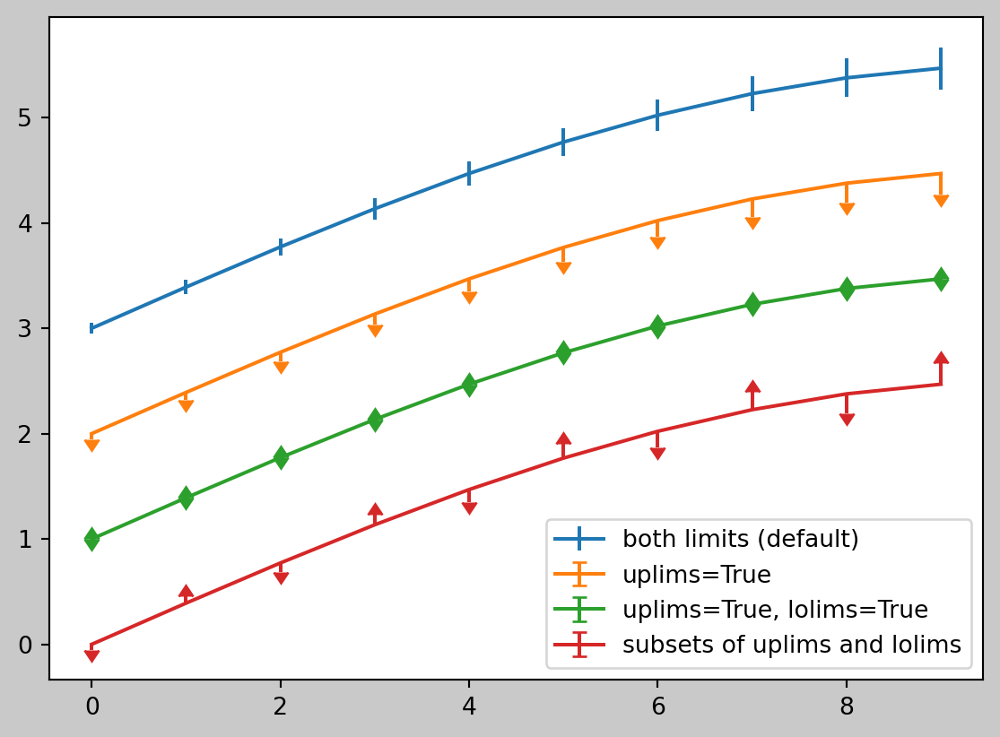

flowchart TD
A[Data Science] --> B{Tool}
B -->|Model| C[Result]
C --> D[Conclusion]
D --> B
B ---->|No| E[End]
The quickest route to acquiring knowledge is through practice.
We strongly believe that the best way to acquire knowledge is through practical experience. That’s why we prioritize experiential learning and recognize the importance of diverse perspectives and identities in education. Our approach to learning is collaborative, interactive, and rooted in shared cultural practices. We value personal autonomy, creativity, and self-fulfillment. It’s worth noting that we do not use rewards or punishments to influence learning.
Learning data science is a continuous journey, and embracing the learning process is essential. Feel free to experiment, make mistakes, and ask questions. With time and practice, you’ll become more comfortable with Data Science and be able to tackle increasingly complex tasks. We suggest using Python for web development, applications, or data science; however, it is not the only option in the market.
Here are some steps you can take to learn data science:
Learn the fundamentals of computer science, including data structures, algorithms, and programming languages. Python is a popular language for data science, but other languages like R and Julia are also used.
Learn the basics of statistics and probability theory, which are essential for understanding data analysis and machine learning.
Learn how to work with data using tools like SQL, Excel, and data visualization libraries like Matplotlib and Seaborn.
Learn machine learning algorithms and techniques, including supervised and unsupervised learning, regression, classification, and clustering.
Practice your skills by working on real-world projects and participating in online communities like Kaggle and GitHub.
Keep up with the latest developments in the field by reading blogs, attending conferences, and following experts on social media.
Start with Python, becuase it is a versatile programming language that has a wide range of applications and is used in many different fields.
Notes: If you have programming experience, it would be beneficial to begin learning basic statistics as a beginner.
Python has a vast ecosystem of libraries that provide a wide range of functionality for various tasks. These libraries can be installed using package managers like pip and conda. Some of the most popular libraries include
- NumPy,
- Pandas,
- Matplotlib,
- Scikit-learn,
- TensorFlow, and PyTorch.
NumPy is a library for numerical computing that provides support for arrays and matrices. Pandas is a library for data manipulation and analysis that provides support for data frames and series. Matplotlib is a library for data visualization that provides support for creating charts and graphs. Scikit-learn is a library for machine learning that provides support for various algorithms and models. TensorFlow and PyTorch are libraries for deep learning that provide support for building and training neural networks.
There are also libraries for web development, such as Flask and Django, and libraries for scientific computing, such as SciPy and SymPy. Python also has libraries for working with databases, such as SQLAlchemy and Psycopg2, and libraries for working with APIs, such as Requests and PyGithub.
Overall, the Python ecosystem of libraries is vast and diverse, providing support for a wide range of tasks and applications.
NumPy
NumPy is a powerful Python library for numerical computing. It provides support for large, multi-dimensional arrays and matrices, along with a collection of mathematical functions to operate on these arrays efficiently. NumPy is widely used in scientific computing, data analysis, and machine learning.
Code
'''
In this code snippet, we are importing the NumPy library and giving it an alias np. NumPy is a library for numerical computing in Python that provides support for arrays and matrices.
Next, we are creating a NumPy array a using the arange() function, which creates an array of integers from 0 to 14. We then use the reshape() function to reshape the array into a 3x5 matrix.
'''
import numpy as np
a = np.arange(15).reshape(3, 5)
aarray([[ 0, 1, 2, 3, 4],
[ 5, 6, 7, 8, 9],
[10, 11, 12, 13, 14]])Matplotlib
Matplotlib is a popular Python library used for creating visualizations and plots. It provides a wide range of functionality for generating various types of charts, graphs, and plots. Here’s a brief introduction to get you started with Matplotlib.
Code
'''
In this code snippet, we are importing the pyplot module from the matplotlib library and giving it an alias plt. matplotlib is a plotting library for Python that provides a wide range of tools for creating visualizations.
Next, we are creating a new figure using the figure() function from pyplot. We then create three NumPy arrays x, y, and yerr using the arange() and linspace() functions. These arrays are used to generate a sine wave with some error bars.
We then set the face color of the figure to #c9c9c9 using the figure() function from pyplot.
Next, we use the errorbar() function from pyplot to plot the sine wave with error bars. We create four different plots with different combinations of upper and lower limits on the error bars. We also add labels to each plot using the label parameter.
Finally, we use the legend() function from pyplot to add a legend to the plot and the show() function to display the plot.
This code demonstrates how to use matplotlib to create a plot with error bars and a legend. matplotlib provides a wide range of tools for creating visualizations, making it a popular choice for data analysis and scientific computing.
'''
import matplotlib.pyplot as plt
fig = plt.figure()
x = np.arange(10)
y = 2.5 * np.sin(x / 20 * np.pi)
yerr = np.linspace(0.05, 0.2, 10)
plt.figure(facecolor='#c9c9c9')
plt.errorbar(x, y + 3, yerr=yerr, label='both limits (default)')
plt.errorbar(x, y + 2, yerr=yerr, uplims=True, label='uplims=True')
plt.errorbar(x, y + 1, yerr=yerr, uplims=True, lolims=True,
label='uplims=True, lolims=True')
upperlimits = [True, False] * 5
lowerlimits = [False, True] * 5
plt.errorbar(x, y, yerr=yerr, uplims=upperlimits, lolims=lowerlimits,
label='subsets of uplims and lolims')
plt.legend(loc='lower right')
plt.show(fig)<Figure size 672x480 with 0 Axes>
Plotly
Plotly is a powerful data visualization library that allows you to create interactive and dynamic visualizations in Python. It supports a wide range of chart types, including line plots, scatter plots, bar charts, histograms, and more. In addition to Python, Plotly also has APIs for R, MATLAB, JavaScript, and other programming languages.
Code
'''
In this code snippet, we are importing the plotly.express module and giving it an alias px. plotly is a Python library for creating interactive visualizations, and plotly.express is a high-level interface for creating many types of plots.
Next, we are importing the plotly.io module and giving it an alias pio. This module provides tools for exporting plots to various file formats.
We then load the gapminder dataset from plotly.express using the data() function and store it in a variable gapminder. This dataset contains information about life expectancy, GDP per capita, and population for various countries over time.
We then filter the dataset to only include data from the year 2007 using the query() function and store the result in a variable gapminder2007.
Next, we use the scatter() function from plotly.express to create a scatter plot of GDP per capita vs. life expectancy, with markers colored by continent and sized by population. We also set the maximum marker size to 60 and specify the country name as the hover text.
Finally, we use the update_layout() function to set the background color of the plot to #c9c9c9 and the show() function to display the plot.
This code demonstrates how to use plotly and plotly.express to create an interactive scatter plot with colored markers and hover text. plotly provides a wide range of tools for creating interactive visualizations, making it a popular choice for data analysis and scientific computing.
'''
import plotly.express as px
import plotly.io as pio
gapminder = px.data.gapminder()
gapminder2007 = gapminder.query("year == 2007")
fig = px.scatter(gapminder2007,
x="gdpPercap", y="lifeExp", color="continent",
size="pop", size_max=60,
hover_name="country")
fig.update_layout(paper_bgcolor='#c9c9c9', plot_bgcolor='#c9c9c9')
fig.show()